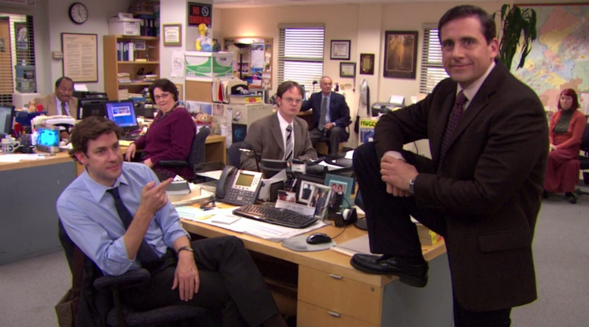
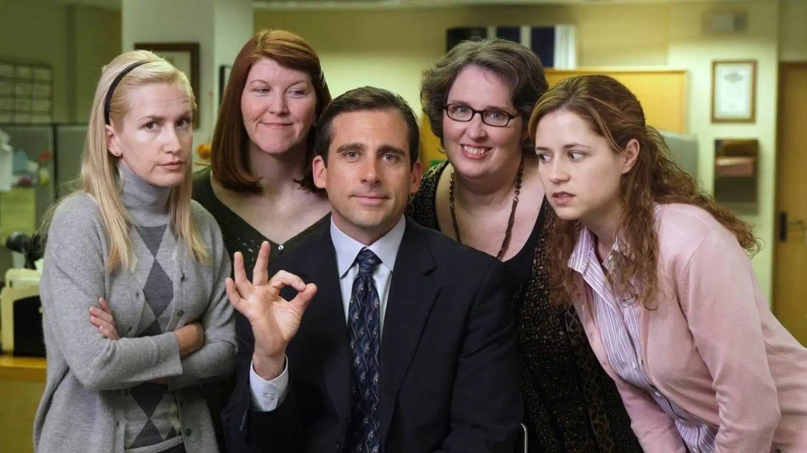
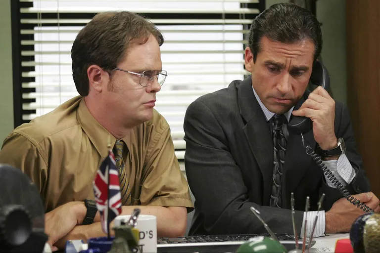

The Office

The Office es una serie de televisión estadounidense de humor ambientada en una oficina regional de venta de papel radicada en la localidad de Scranton, en Pensilvania (Estados Unidos). Adaptada a partir de la serie británica del mismo nombre, se estrenó en la cadena de televisión estadounidense National Broadcasting Company (NBC) el 24 de marzo de 2005. Ha ganado los premios Primetime Emmy y Peabody Aunque se trata de una obra de ficción, la grabación adopta el formato de falso documental, en el sentido de que los actores a veces miran a cámara e, incluso, se dirigen directamente a ella comentando algunas escenas.
Basada en su homónima británica, fue adaptada a la audiencia estadounidense por el productor ejecutivo Greg Daniels, que había sido guionista de Saturday Night Live, King of the Hill y Los Simpson. En los créditos de la serie también figuran Ricky Gervais y Stephen Merchant, creadores de la serie original inglesa. Fue coproducida por Deedle-Dee Productions (una compañía de Greg Daniels) y Reveille Productions, en asociación con NBC Universal Television.

Se emitió a través de la NBC en los Estados Unidos y a través de otros canales de televisión por todo el mundo. En enero de 2007, la NBC decidió grabar una cuarta temporada, que se difundió entre septiembre de 2007 y mayo de 2008, con un parón de varios meses debido a una huelga de guionistas. En el otoño de 2007 la Turner Broadcasting System empezó a emitir los episodios a razón de uno por semana, y después, a partir del otoño de 2009, diariamente de lunes a viernes. Los canales de televisión de Fox también consiguieron los derechos de la serie en otoño de 2009. Si bien la primera temporada fue acogida con opiniones dispares, las siguientes cosecharon el aplauso prácticamente unánime de la crítica y el público.
Un típico episodio de la serie dura 20 minutos aproximadamente. Pero el final de la segunda temporada introdujo el primero de lo que serían varios episodios extensos (de aproximadamente 29 minutos). Por otra parte, la cuarta temporada introdujo lo que serían episodios de una hora, menos usuales que los anteriores, con una duración de 41 minutos aproximadamente, conformando así una hora de programación con comerciales, y formado por dos episodios.
La primera transmisión de The Office fue el jueves 24 de marzo de 2005, antes del episodio de The Apprentice en la NBC, The Office atrajo un total de 11,2 millones de espectadores en los Estados Unidos, logrando quedar primero. Cuando la NBC trasladó la serie a su horario previsto de los martes por la noche, perdió casi la mitad de su audiencia con solo 5,9 millones de espectadores. El programa tuvo un promedio de 5,4 millones de espectadores, colocándolo en el n.º102 de la temporada 2004-2005 de la televisión estadounidense.
